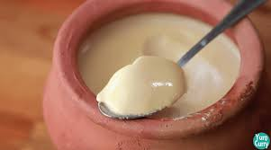
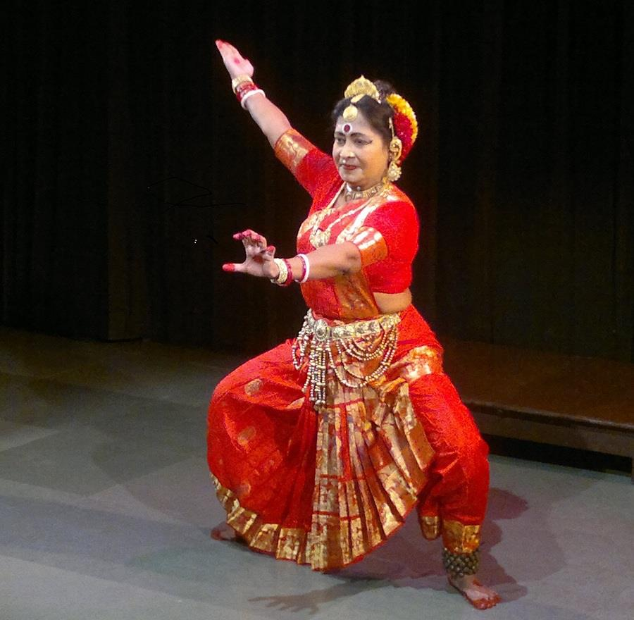
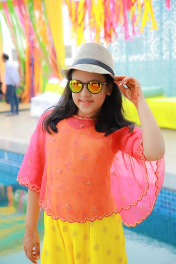

places must visit

victoria memorial
i had visited in July 2017
The Victoria Memorial is a large marble building in Kolkata, West Bengal, India, which was built between 1906 and 1921. It is dedicated to the memory of Queen Victoria, then Empress of India, and is now a museum under the auspices of the Ministry of Culture.The memorial lies on the Maidan, near Jawaharlal Nehru Road (also known as Chowringhee Road).

National Library of India
I Had Visited In Feb 2019
The National Library of India is a library located in Belvedere Estate, Alipore, Kolkata, India.It is India's largest library by volume and public record.The National Library is under Ministry of Culture, Government of India. The library is designated to collect, disseminate and preserve printed material produced within India. With a collection in excess of 2.2 million books and records, it is the largest in the country.Before independence, it was the official residence of Governor-General of India.
Mullick Ghat Flower Market
I Had Visited In Oct 2019
Built in the year 1855, it is not only one of the largest flower markets of India but also Asia! Located near the famous Howrah Bridge on the Hooghly River at the Mallik Ghat, the place is the epitome of hustle bustle, continuous activity and color. Starting as early as four in the morning, the market is teeming with vendors and buyers selling flowers in myriad hues, shapes and sizes.
Recommended Hotels
Wonderful Ambience and service
ITC Royal Bengal pays tribute to the towering achievements of the great minds of Bengal and its people, who celebrate the royalty of the intellect. This magnificent hotel brings you the luxury of space, the burnished gleam of aristocratic décor and the hushed elegance of homes that have celebrated the finest nuances of art, culture, music, cuisines. It cherishes the finest in every facet of life.
nice service and maintaining all norms of social distancing
The Park, Kolkata, offers urban luxury at the best downtown location, which allows you to access the main commercial and entertainment districts of the city. Its rooms and suites are all lavishly furnished, offering exclusive services to guests, and is a popular destination for the young business traveler and those from the fashion and entertainment fraternity. Known for its exciting after hours entertainment, it is home to 4 nightlife destinations under one roof, which creates a buzz for itself around the country.
the place to be and the best nightlife experience in kolkata
Welcome to JW Marriott Kolkata - a landmark of luxury in the east of India and a top choice among 5-star hotels in Kolkata. Towering over JBS Haldane Avenue just 6km from Netaji Subhash Chandra Bose Airport, our hotel is equidistant from the airport and the old central business district. JW Marriott Kolkata boasts 281 spacious rooms with state-of-the-art facilities. We are a premier choice among hotels in Kolkata due to our passion for personal service and our exemplary dining options. At JW Marriott Kolkata, guests enjoy a convenient location, impeccable restaurants, luxurious rooms and suites, and large event spaces that are suitable for corporate events, weddings, and other functions. Our hotel also provides a beautiful infinity pool, a fitness club, and a holistic Spa by JW.
culture
-
Food : Mishti Doi
Mishti doi is a fermented sweet doi (yogurt) originating from Bogra District in Bangladesh and a very popular dessert throughout the country. It is also popular in the Indian states of West Bengal, Tripura, Assam and Odisha. It is made with milk and sugar/jaggery. It differs from the plain yogurt because of the technique of preparation. Mishti doi is prepared by boiling milk until it is slightly thickened, sweetening it with sugar, either gura (brown sugar) or khejur gura (date molasses), and allowing the milk to ferment overnight. Earthenware is always used as the container for making mitha dahi because the gradual evaporation of water through its porous walls not only further thickens the yoghurt, but also produces the right temperature for the growth of the culture. Very often the yoghurt is delicately seasoned with a pinch of cardamom for fragrance. Baked yogurt is a similar preparation in the west.
-
Dance : Gaudiya Nritya
Gaudiya Nritya or Gauriya Nritya, is a Bengali dance tradition. It originates from Gauda, also known as Gaur, in Bengal. It has been reconstructed by Mahua Mukherjee. It is not recognised as an Indian classical dance by the Sangeet Natak Akademi, but study of it is eligible for scholarships from the Ministry of Culture of India. Scholarly reception of the reconstruction ranges from caution to scepticism.
